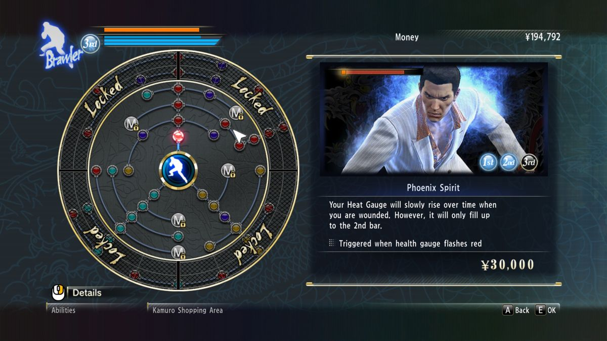
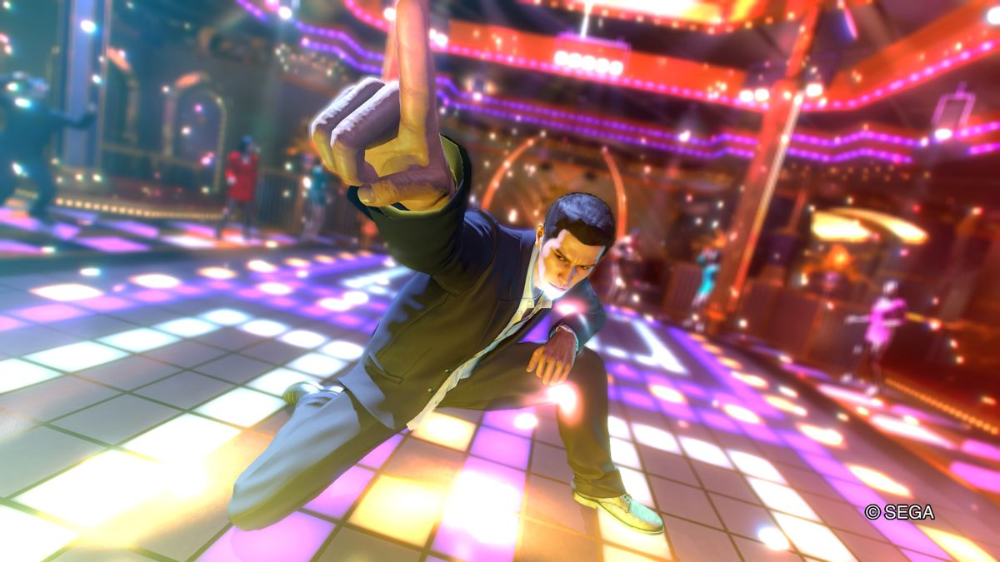

Yakuza 0
Publishing Info
- Published by: SEGA Corporation
- Developed by: Ryu ga Gotoku Studio
- Released: March 12, 2015
Description
The glitz, glamour, and unbridled decadence of the 80s are back in Yakuza 0. Fight like hell through Tokyo and Osaka with protagonist Kazuma Kiryu and series regular Goro Majima. Play as Kazuma Kiryu and discover how he finds himself in a world of trouble when a simple debt collection goes wrong and his mark winds up murdered. Then, step into the silver-toed shoes of Goro Majima and explore his “normal” life as the proprietor of a cabaret club. Switch between three different fighting styles instantaneously and beat up all manner of goons, thugs, hoodlums, and lowlifes. Take combat up a notch by using environmental objects such as bicycles, sign posts, and car doors for bone-crunching combos and savage take-downs.
Fighting is not the only way to kill time in 1988’s Japan: from discos and hostess clubs to classic SEGA arcades, there are tons of distractions to pursue in the richly detailed, neon-lit world.
 Game Categories
- Genre: Role-playing (RPG)
- Perspective: 3rd-person (Other)
- Gameplay: Mini-games
Quote
A wondrous melting pot of Japanese cultural excess distilled into a relentlessly compelling synergy of RPG and action elements, Yakuza 0 arguably represents the consummate entry point for newcomers to the series. Without a doubt, Yakuza 0 is a masterpiece and the first must-have title of the year. -- psu.com/reviews/yakuza-0-review-ps4/